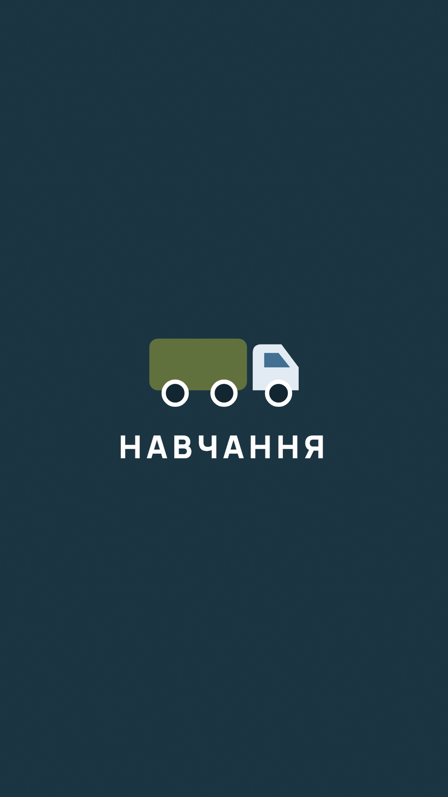

Шість кроків — і готово
Чотири кадри — готові відео, їх треба тільки зберегти й викласти. Знімати потрібно один раз, на четвертому кроці.
Кроки
Згори вниз, не перескакуючи. Натиснули «Готово» — крок позеленів.
Питання
«Скільки виходить у логіста?» Кадр лише ставить питання — відповідь буде далі.
- Зберегти й викласти як є
- Наліпок і тексту не додавати
Відповідь — цифра
На мінімалках виходить від €1 247 на місяць. Далі в кадрі з'являється драбинка: скільки буде, коли машин і ставки більше.
- Зберегти й викласти як є
- Можна додати опитування «Думали, більше чи менше?»
Цифри рахуються за тією ж формулою, що й калькулятор на сайті. Хто піде перевіряти — усе зійдеться.
Коли вмієте все
Чотири вміння вмикаються одне за одним — і виходить уже €4 676. Видно, за що саме платять більше.
- Зберегти й викласти
- Зверху — наліпка з посиланням на сайт
Розмовна сторіс
Селфі-камера, 25–30 секунд, без тексту на екрані. Тут продає ваше обличчя, а не напис.
Не вчіть напам'ять. Прочитайте двічі й скажіть своїми словами — так живіше.
Відгук Богдани
Готовий ролик, нічого дописувати не треба. Викладайте як є.
Юрист із Кракова, зараз веде логістику в компанії чоловікаПрограма навчання
Вступ і 8 модулів. Низ кадру навмисно порожній — туди наліпка з посиланням.
- Зберегти й викласти
- Наліпка з посиланням на сайт — у порожній низ
- Те саме посилання поставити в шапку профілю
Рілси в профіль
Окремо від сторіс — два ролики у стрічку як Reels, по порядку: спочатку №1, наступного дня №2. До кожного свій підпис.
Програма: скільки заробляє логіст
Ваше відео: від чого залежить дохід, картки вантажів, програма «Вступ і 8 модулів» на сайті й фінал «напишіть «логістика»».
- Завантажити й викласти як Reels
- Обкладинка — перший кадр
- Підпис — скопіювати нижче
- Перевірити, що автовідповідь на «логістика» в коментарях увімкнена
Файл великий (≈39 МБ) — у повній якості, Instagram стисне сам. Завантажуйте через Wi-Fi.
Відгук Богдани
Той самий ролик, що й у сторіс, — тепер ще й у стрічку, щоб лишився в профілі назавжди.
- Завантажити й викласти як Reels
- Підпис — скопіювати нижче
Після публікації

Зберегти серію
Щоб вона працювала й завтра, і через місяць.
- Профіль → «Актуальне» → «+» → додати всі шість кадрів
- Назва — Навчання
- Обкладинка — ця картинка

Коли прийде заявка
Форма на сайті вже працює. Заявка падає у вашу групу в Telegram одразу — з іменем, номером і зручним часом.